Twelve photographs hang in a set of empty, tiled pool rooms. Nobody else is here. Walk through, wade across the water, and stop where you like, or let the page walk you round.
WASD or ↑↓ walk · ←→ or QE turn · drag to look · PageDown or N next photograph · PageUp or P the one before · T walk me round · L all plates · M sound. The keys work while the view has the focus: click it, or press Tab until it is outlined.
Drag on the left of the screen to walk. Drag on the right to look round.
The photographs are stand-in test images from the Kodak set, hung here to show the rooms working. Their terms of reuse are not settled, and they must be replaced with the owner's own photographs before this page goes public. After a post by Ben Springer. This is an original build: the rooms, the water and the light were written for this page.
The 3D rooms could not be opened here, so the twelve photographs are shown below as a plain list.
Each photograph hangs in the rooms with a numbered plate and no title. These are stand-in test images from the Kodak set; their terms of reuse are not settled, and they must be replaced with the owner's own photographs before this page goes public.
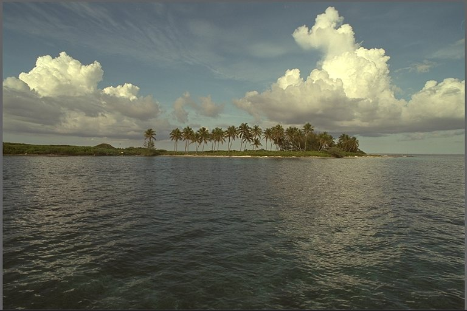
Plate 01 A low island lined with palm trees across still water, with tall white clouds above.
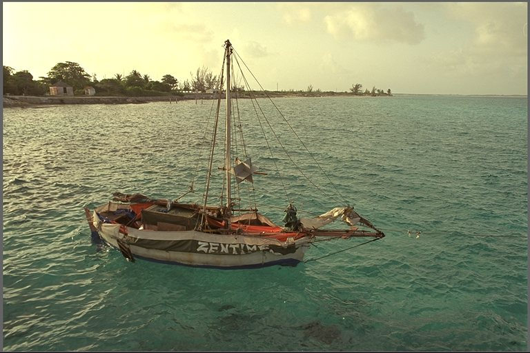
Plate 02 A small wooden sailing boat at anchor on calm turquoise water, a low shoreline behind it.
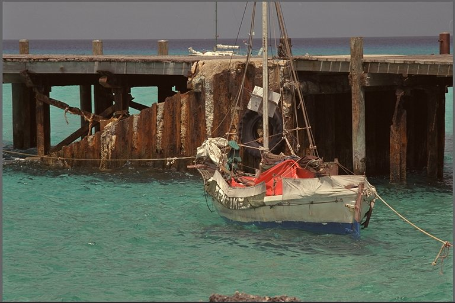
Plate 03 A weathered boat moored beside a rusting, broken jetty on green water.
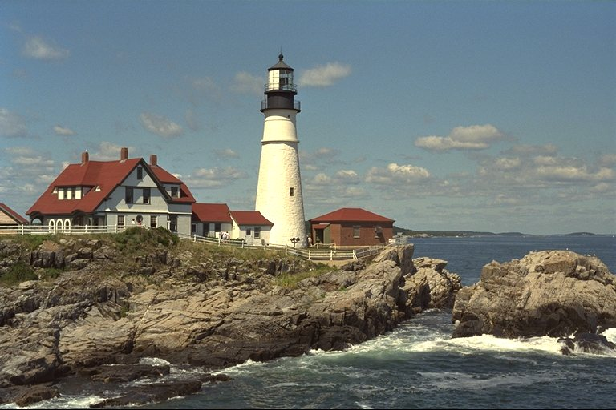
Plate 04 A white lighthouse and red-roofed houses on a rocky shore, waves breaking below.
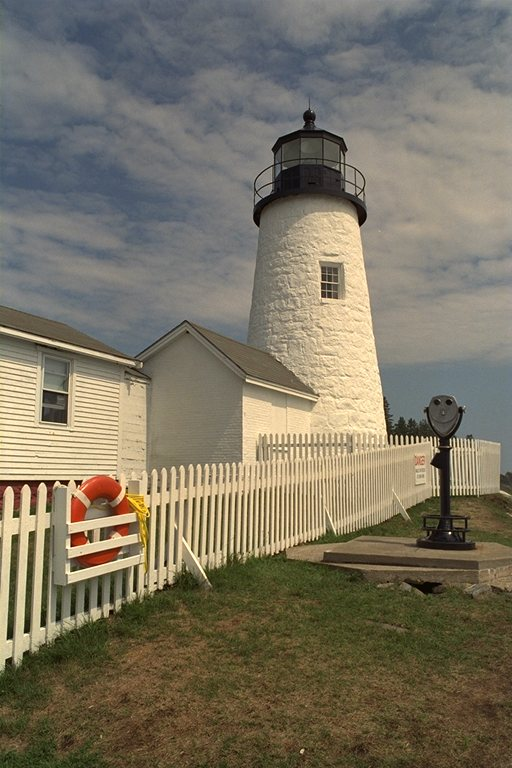
Plate 05 A white lighthouse behind a white picket fence, under a blue sky with white cloud.
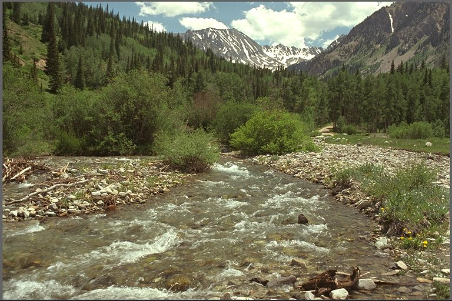
Plate 06 A stony mountain stream running through green forest, with snow on the peaks beyond.
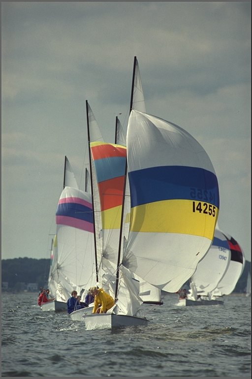
Plate 07 Racing dinghies under striped spinnaker sails on grey water.
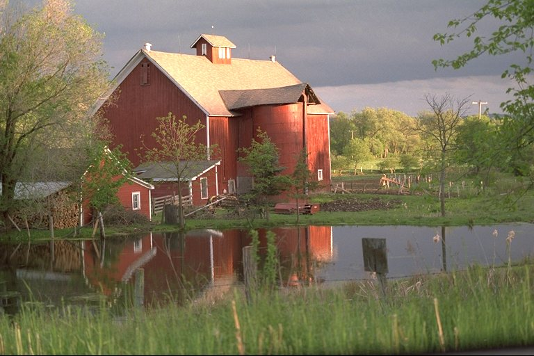
Plate 08 A red barn reflected in a pond, among trees in spring leaf.
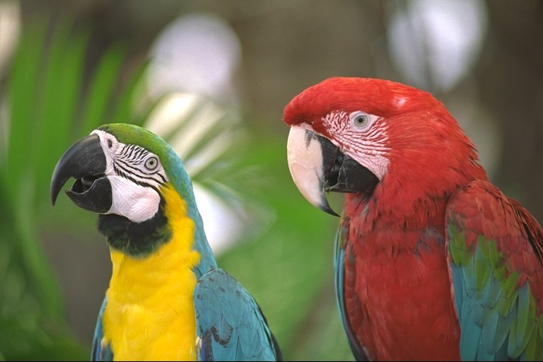
Plate 09 Two macaws side by side, one blue and yellow, one red, against green leaves.
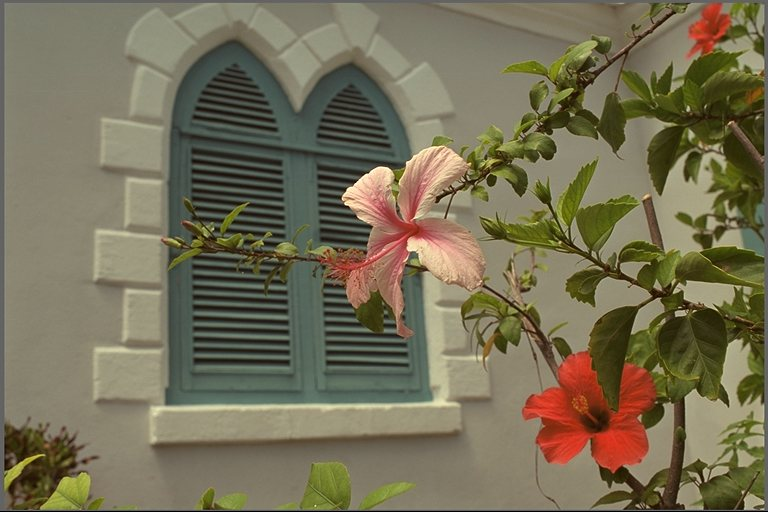
Plate 10 An arched, shuttered window in a pale wall, with pink and red hibiscus flowers in front.
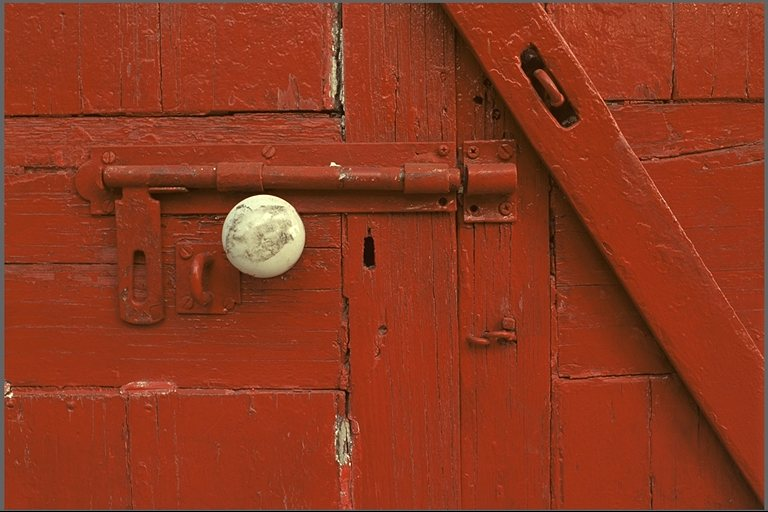
Plate 11 A close view of a red painted door with an iron bolt and a round white knob.
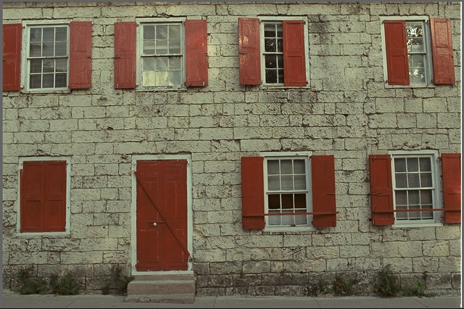
Plate 12 The front of a stone building with red shutters and a red door.